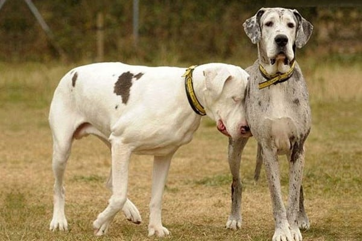

A N I M A L Z
A N I M A L Z

Maddison and Lily
The Great Dane Lily and Maddison have proved how important friendship is to survive in the world. When a 6 year old Great Dane Lily lost her eyes, she went into depression until Maddison came along. Not only did Madison become the eyes of Lily, she rubbed against her body to show affection and together they did everything that two normal dogs would do. They run and play together and spend time with each other to the extent that not one goes anywhere without the other. Lily is now happy and out of depression. Here is a glass that is always half full!